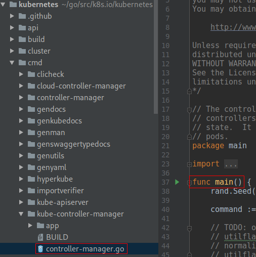

控制器概述
编辑中！！！
编辑中！！！
编辑中！！！

cmd/kube-controller-manager/controller-manager.go:37
func main() {
rand.Seed(time.Now().UnixNano())
command := app.NewControllerManagerCommand()
logs.InitLogs()
defer logs.FlushLogs()
if err := command.Execute(); err != nil {
fmt.Fprintf(os.Stderr, "%v\n", err)
os.Exit(1)
}
}
cmd/kube-controller-manager/app/controllermanager.go:98
Run: func(cmd *cobra.Command, args []string) {
verflag.PrintAndExitIfRequested()
utilflag.PrintFlags(cmd.Flags())
c, err := s.Config(KnownControllers(), ControllersDisabledByDefault.List())
if err != nil {
fmt.Fprintf(os.Stderr, "%v\n", err)
os.Exit(1)
}
if err := Run(c.Complete(), wait.NeverStop); err != nil {
fmt.Fprintf(os.Stderr, "%v\n", err)
os.Exit(1)
}
},
!FILENAME cmd/kube-controller-manager/app/controllermanager.go:149
// Run runs the KubeControllerManagerOptions. This should never exit.
func Run(c *config.CompletedConfig, stopCh <-chan struct{}) error
cmd/kube-controller-manager/app/controllermanager.go:212
if err := StartControllers(controllerContext, saTokenControllerInitFunc, NewControllerInitializers(controllerContext.LoopMode), unsecuredMux); err != nil {
klog.Fatalf("error starting controllers: %v", err)
}
cmd/kube-controller-manager/app/controllermanager.go:480
func StartControllers(ctx ControllerContext, startSATokenController InitFunc, controllers map[string]InitFunc, unsecuredMux *mux.PathRecorderMux) error {
// Always start the SA token controller first using a full-power client, since it needs to mint tokens for the rest
// If this fails, just return here and fail since other controllers won't be able to get credentials.
if _, _, err := startSATokenController(ctx); err != nil {
return err
}
// Initialize the cloud provider with a reference to the clientBuilder only after token controller
// has started in case the cloud provider uses the client builder.
if ctx.Cloud != nil {
ctx.Cloud.Initialize(ctx.ClientBuilder, ctx.Stop)
}
for controllerName, initFn := range controllers {
if !ctx.IsControllerEnabled(controllerName) {
klog.Warningf("%q is disabled", controllerName)
continue
}
time.Sleep(wait.Jitter(ctx.ComponentConfig.Generic.ControllerStartInterval.Duration, ControllerStartJitter))
klog.V(1).Infof("Starting %q", controllerName)
debugHandler, started, err := initFn(ctx)
if err != nil {
klog.Errorf("Error starting %q", controllerName)
return err
}
if !started {
klog.Warningf("Skipping %q", controllerName)
continue
}
if debugHandler != nil && unsecuredMux != nil {
basePath := "/debug/controllers/" + controllerName
unsecuredMux.UnlistedHandle(basePath, http.StripPrefix(basePath, debugHandler))
unsecuredMux.UnlistedHandlePrefix(basePath+"/", http.StripPrefix(basePath, debugHandler))
}
klog.Infof("Started %q", controllerName)
}
return nil
}
cmd/kube-controller-manager/app/controllermanager.go:362
// NewControllerInitializers is a public map of named controller groups (you can start more than one in an init func)
// paired to their InitFunc. This allows for structured downstream composition and subdivision.
func NewControllerInitializers(loopMode ControllerLoopMode) map[string]InitFunc {
controllers := map[string]InitFunc{}
controllers["endpoint"] = startEndpointController
controllers["replicationcontroller"] = startReplicationController
controllers["podgc"] = startPodGCController
controllers["resourcequota"] = startResourceQuotaController
controllers["namespace"] = startNamespaceController
controllers["serviceaccount"] = startServiceAccountController
controllers["garbagecollector"] = startGarbageCollectorController
controllers["daemonset"] = startDaemonSetController
controllers["job"] = startJobController
controllers["deployment"] = startDeploymentController
controllers["replicaset"] = startReplicaSetController
controllers["horizontalpodautoscaling"] = startHPAController
controllers["disruption"] = startDisruptionController
controllers["statefulset"] = startStatefulSetController
controllers["cronjob"] = startCronJobController
controllers["csrsigning"] = startCSRSigningController
controllers["csrapproving"] = startCSRApprovingController
controllers["csrcleaner"] = startCSRCleanerController
controllers["ttl"] = startTTLController
controllers["bootstrapsigner"] = startBootstrapSignerController
controllers["tokencleaner"] = startTokenCleanerController
controllers["nodeipam"] = startNodeIpamController
if loopMode == IncludeCloudLoops {
controllers["service"] = startServiceController
controllers["route"] = startRouteController
// TODO: volume controller into the IncludeCloudLoops only set.
// TODO: Separate cluster in cloud check from node lifecycle controller.
}
controllers["nodelifecycle"] = startNodeLifecycleController
controllers["persistentvolume-binder"] = startPersistentVolumeBinderController
controllers["attachdetach"] = startAttachDetachController
controllers["persistentvolume-expander"] = startVolumeExpandController
controllers["clusterrole-aggregation"] = startClusterRoleAggregrationController
controllers["pvc-protection"] = startPVCProtectionController
controllers["pv-protection"] = startPVProtectionController
controllers["ttl-after-finished"] = startTTLAfterFinishedController
controllers["root-ca-cert-publisher"] = startRootCACertPublisher
return controllers
}
cmd/kube-controller-manager/app/controllermanager.go:335
// InitFunc is used to launch a particular controller. It may run additional "should I activate checks".
// Any error returned will cause the controller process to `Fatal`
// The bool indicates whether the controller was enabled.
type InitFunc func(ctx ControllerContext) (debuggingHandler http.Handler, enabled bool, err error)
cmd/kube-controller-manager/app/controllermanager.go:263
type ControllerContext struct {
// ClientBuilder will provide a client for this controller to use
ClientBuilder controller.ControllerClientBuilder
// InformerFactory gives access to informers for the controller.
InformerFactory informers.SharedInformerFactory
// ComponentConfig provides access to init options for a given controller
ComponentConfig kubectrlmgrconfig.KubeControllerManagerConfiguration
// DeferredDiscoveryRESTMapper is a RESTMapper that will defer
// initialization of the RESTMapper until the first mapping is
// requested.
RESTMapper *restmapper.DeferredDiscoveryRESTMapper
// AvailableResources is a map listing currently available resources
AvailableResources map[schema.GroupVersionResource]bool
// Cloud is the cloud provider interface for the controllers to use.
// It must be initialized and ready to use.
Cloud cloudprovider.Interface
// Control for which control loops to be run
// IncludeCloudLoops is for a kube-controller-manager running all loops
// ExternalLoops is for a kube-controller-manager running with a cloud-controller-manager
LoopMode ControllerLoopMode
// Stop is the stop channel
Stop <-chan struct{}
// InformersStarted is closed after all of the controllers have been initialized and are running. After this point it is safe,
// for an individual controller to start the shared informers. Before it is closed, they should not.
InformersStarted chan struct{}
// ResyncPeriod generates a duration each time it is invoked; this is so that
// multiple controllers don't get into lock-step and all hammer the apiserver
// with list requests simultaneously.
ResyncPeriod func() time.Duration
}
cmd/kube-controller-manager/app/apps.go:69
func startReplicaSetController(ctx ControllerContext) (http.Handler, bool, error) {
if !ctx.AvailableResources[schema.GroupVersionResource{Group: "apps", Version: "v1", Resource: "replicasets"}] {
return nil, false, nil
}
go replicaset.NewReplicaSetController(
ctx.InformerFactory.Apps().V1().ReplicaSets(),
ctx.InformerFactory.Core().V1().Pods(),
ctx.ClientBuilder.ClientOrDie("replicaset-controller"),
replicaset.BurstReplicas,
).Run(int(ctx.ComponentConfig.ReplicaSetController.ConcurrentRSSyncs), ctx.Stop)
return nil, true, nil
}
pkg/controller/replicaset/replica_set.go:109
// NewReplicaSetController configures a replica set controller with the specified event recorder
func NewReplicaSetController(rsInformer appsinformers.ReplicaSetInformer, podInformer coreinformers.PodInformer, kubeClient clientset.Interface, burstReplicas int) *ReplicaSetController {
eventBroadcaster := record.NewBroadcaster()
eventBroadcaster.StartLogging(klog.Infof)
eventBroadcaster.StartRecordingToSink(&v1core.EventSinkImpl{Interface: kubeClient.CoreV1().Events("")})
return NewBaseController(rsInformer, podInformer, kubeClient, burstReplicas,
apps.SchemeGroupVersion.WithKind("ReplicaSet"),
"replicaset_controller",
"replicaset",
controller.RealPodControl{
KubeClient: kubeClient,
Recorder: eventBroadcaster.NewRecorder(scheme.Scheme, v1.EventSource{Component: "replicaset-controller"}),
},
)
}
pkg/controller/replicaset/replica_set.go:126
// NewBaseController is the implementation of NewReplicaSetController with additional injected
// parameters so that it can also serve as the implementation of NewReplicationController.
func NewBaseController(rsInformer appsinformers.ReplicaSetInformer, podInformer coreinformers.PodInformer, kubeClient clientset.Interface, burstReplicas int,
gvk schema.GroupVersionKind, metricOwnerName, queueName string, podControl controller.PodControlInterface) *ReplicaSetController {
if kubeClient != nil && kubeClient.CoreV1().RESTClient().GetRateLimiter() != nil {
metrics.RegisterMetricAndTrackRateLimiterUsage(metricOwnerName, kubeClient.CoreV1().RESTClient().GetRateLimiter())
}
rsc := &ReplicaSetController{
GroupVersionKind: gvk,
kubeClient: kubeClient,
podControl: podControl,
burstReplicas: burstReplicas,
expectations: controller.NewUIDTrackingControllerExpectations(controller.NewControllerExpectations()),
queue: workqueue.NewNamedRateLimitingQueue(workqueue.DefaultControllerRateLimiter(), queueName),
}
rsInformer.Informer().AddEventHandler(cache.ResourceEventHandlerFuncs{
AddFunc: rsc.enqueueReplicaSet,
UpdateFunc: rsc.updateRS,
// This will enter the sync loop and no-op, because the replica set has been deleted from the store.
// Note that deleting a replica set immediately after scaling it to 0 will not work. The recommended
// way of achieving this is by performing a `stop` operation on the replica set.
DeleteFunc: rsc.enqueueReplicaSet,
})
rsc.rsLister = rsInformer.Lister()
rsc.rsListerSynced = rsInformer.Informer().HasSynced
podInformer.Informer().AddEventHandler(cache.ResourceEventHandlerFuncs{
AddFunc: rsc.addPod,
// This invokes the ReplicaSet for every pod change, eg: host assignment. Though this might seem like
// overkill the most frequent pod update is status, and the associated ReplicaSet will only list from
// local storage, so it should be ok.
UpdateFunc: rsc.updatePod,
DeleteFunc: rsc.deletePod,
})
rsc.podLister = podInformer.Lister()
rsc.podListerSynced = podInformer.Informer().HasSynced
rsc.syncHandler = rsc.syncReplicaSet
return rsc
}
pkg/controller/replicaset/replica_set.go:74
// ReplicaSetController is responsible for synchronizing ReplicaSet objects stored
// in the system with actual running pods.
type ReplicaSetController struct {
// GroupVersionKind indicates the controller type.
// Different instances of this struct may handle different GVKs.
// For example, this struct can be used (with adapters) to handle ReplicationController.
schema.GroupVersionKind
kubeClient clientset.Interface
podControl controller.PodControlInterface
// A ReplicaSet is temporarily suspended after creating/deleting these many replicas.
// It resumes normal action after observing the watch events for them.
burstReplicas int
// To allow injection of syncReplicaSet for testing.
syncHandler func(rsKey string) error
// A TTLCache of pod creates/deletes each rc expects to see.
expectations *controller.UIDTrackingControllerExpectations
// A store of ReplicaSets, populated by the shared informer passed to NewReplicaSetController
rsLister appslisters.ReplicaSetLister
// rsListerSynced returns true if the pod store has been synced at least once.
// Added as a member to the struct to allow injection for testing.
rsListerSynced cache.InformerSynced
// A store of pods, populated by the shared informer passed to NewReplicaSetController
podLister corelisters.PodLister
// podListerSynced returns true if the pod store has been synced at least once.
// Added as a member to the struct to allow injection for testing.
podListerSynced cache.InformerSynced
// Controllers that need to be synced
queue workqueue.RateLimitingInterface
}
pkg/controller/replicaset/replica_set.go:177
// Run begins watching and syncing.
func (rsc *ReplicaSetController) Run(workers int, stopCh <-chan struct{}) {
defer utilruntime.HandleCrash()
defer rsc.queue.ShutDown()
controllerName := strings.ToLower(rsc.Kind)
klog.Infof("Starting %v controller", controllerName)
defer klog.Infof("Shutting down %v controller", controllerName)
if !controller.WaitForCacheSync(rsc.Kind, stopCh, rsc.podListerSynced, rsc.rsListerSynced) {
return
}
for i := 0; i < workers; i++ {
go wait.Until(rsc.worker, time.Second, stopCh)
}
<-stopCh
}
pkg/controller/replicaset/replica_set.go:432
// worker runs a worker thread that just dequeues items, processes them, and marks them done.
// It enforces that the syncHandler is never invoked concurrently with the same key.
func (rsc *ReplicaSetController) worker() {
for rsc.processNextWorkItem() {
}
}
pkg/controller/replicaset/replica_set.go:437
func (rsc *ReplicaSetController) processNextWorkItem() bool {
key, quit := rsc.queue.Get()
if quit {
return false
}
defer rsc.queue.Done(key)
err := rsc.syncHandler(key.(string))
if err == nil {
rsc.queue.Forget(key)
return true
}
utilruntime.HandleError(fmt.Errorf("Sync %q failed with %v", key, err))
rsc.queue.AddRateLimited(key)
return true
}
!FILENAME pkg/controller/replicaset/replica_set.go:571
func (rsc *ReplicaSetController) syncReplicaSet(key string) error